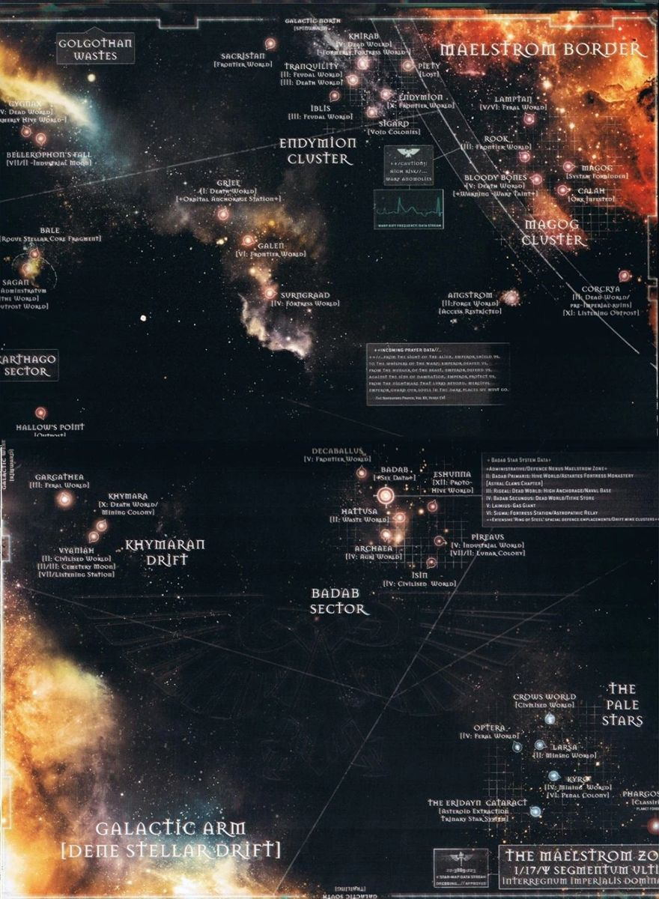

Maelstrom
| Maelstrom | |
|---|---|
 Navigational chart of the Ultima Segmentum, with the Maelstrom near the galactic core Artwork © Games Workshop | |
| Type | Warp rift; Majoris Grade warp anomaly |
| Location | Ultima Segmentum, near the galactic core, between the core and Terra |
| Extent | Many hundreds of light years |
| Origin | Natural; older than humanity, by Imperial reckoning |
| Administratum designation | Maelstrom Adjacent Autonomous Imperial Resource Extraction Zone, Grid 004-357 |
| Imperial status | Declared Purgatus during the Great Crusade (late M30) |
| Neighbouring region | The Badab Sector |
| Inhabitants | |
| The Red Corsairs under Huron Blackheart; Word Bearers of Ghalmek; Ork empires; Hrud; pirate kingdoms; Drukhari raiders | |
The Maelstrom is a vast Warp storm in the Ultima Segmentum, close to the dense stars of the galactic core. Within it realspace and the Warp overlap, travel is nearly impossible, and worlds are lost and found again as the storm turns. It is the second greatest warp rift known to the Imperium after the Eye of Terror, and unlike the Eye it is believed to be a natural phenomenon older than humanity. The region of Imperial space around it is called the Maelstrom Zone.[1][2]
The Maelstrom is a refuge for every kind of outlaw: pirates, renegades, Orks, xenos raiders and the Chaos Space Marines. Since the Badab War of 901–913.M41 it has been the domain of Huron Blackheart and the Red Corsairs, and in the Era Indomitus the fleet of the Terran Crusade was held prisoner within it.[2][3]
Nature
[edit]
The Maelstrom is a slowly turning gyre of nebulae, dust and stars, hundreds of light years across. The Navigators call it more stable than most warp storms, but no chart of its interior remains accurate for long, and it waxes and wanes over the centuries. Daemonic incursions are frequent at the points where the Warp breaks into realspace, and many of the worlds inside it have been tainted by Chaos. Savants who have tried to find a pattern in its movements have often gone mad; those who left readable records compared its rhythms to the breathing of a sleeping god or the brain-patterns of a nightmare.[1]
The Deathwatch estimated in the 41st millennium that at least twenty major Ork empires and petty pirate kingdoms were based in the storm at any one time, alongside Hrud infestations and the havens of human corsairs.[4]
History
[edit]Great Crusade
[edit]Humanity's presence in the Maelstrom Zone dates to the Dark Age of Technology, and the region's mineral wealth has drawn the Imperium back again and again. During the Great Crusade, in the late 30th millennium, the Emperor's forces attempted to cleanse the storm and lost hundreds of warships and thousands of troops. With the rest of the galaxy still to conquer, the Emperor declared the region Purgatus.[2]
After the Battle of Calth in 007.M31, part of the Word Bearers Legion fled into the Maelstrom and established a stronghold on the daemon world Ghalmek, which they are believed still to hold.[5]
Containment
[edit]After the Horus Heresy, Roboute Guilliman judged the storm too great a threat to leave unwatched and ordered the surrounding regions reinforced. In the 38th and 39th millennia the Imperium established a chain of outposts in the Maelstrom Zone, the systems of Cygnax, Sagan and Badab, through which the region's resources reached the wider Imperium.[2]
The Maelstrom Warders
[edit]In 557.M41 the hive world Cygnax, the most populous world of the northern Maelstrom Zone, fell into civil war between its garrison and a death cult backed by a Chaos warband called the Reborn. The cultists seized part of the planet's missile defences and destroyed its hive cities, and with them Imperial control of the northern Zone.[2]
In 587.M41 the High Lords of Terra issued an Edict Imperialis ordering several Space Marine Chapters to base themselves permanently in the Maelstrom Zone. The Maelstrom Warders were led by the Astral Claws, who made an orbital station in the Badab system their fortress-monastery, with the Lamenters, the Charnel Guard and the Mantis Warriors. A naval squadron was attached, and for a time the Zone was pacified. Between 640 and 651.M41 the Warders carried the war into the storm in the Scourge Campaign, which ended when the Charnel Guard were recalled.[2]
The Tyrant of Badab
[edit]In 715.M41 Lufgt Huron became Chapter Master of the Astral Claws after his predecessor, Rovik Blake, fell in the Maelstrom to the Ork Warboss Vorg Manburna. Huron made himself ruler of the Badab system as the Tyrant of Badab, withheld his Chapter's gene-seed tithes and grew his force far beyond a Codex Chapter. In 901.M41 he led the Astral Claws and their allies into secession, and the Badab War lasted until 913.M41. Huron was struck down in the last assault on his Palace of Thorns but was carried away alive by his followers, and more than two hundred Astral Claws escaped into the Maelstrom.[2]
The Red Corsairs
[edit]Within the storm Huron, rebuilt with heretical augmetics, took the name Huron Blackheart and named his followers the Red Corsairs. From their stronghold of New Badab they raid every shipping lane within thousands of light years, and their ranks have been swelled by renegades from many Chapters. Before the Thirteenth Black Crusade, Abaddon the Despoiler gave Huron one of the Blackstone Fortresses taken in the Gothic War, which is hidden in the Maelstrom.[2][6]
Era Indomitus
[edit]The opening of the Great Rift in 999.M41 strengthened warp storms across the galaxy. During Guilliman's Terran Crusade in the first years of the Era Indomitus, the Lord Commander's fleet was cast into the Maelstrom by a ritual of Magnus the Red, captured by the Greater Daemon Kairos Fateweaver and imprisoned in the Red Corsairs' Blackstone Fortress under the renegade lord Verngar the Apostate. Freed by the Fallen Angel Cypher and the Harlequins of the Masque of the Veiled Path, the survivors escaped through the Webway to Luna. The Ordo Malleus reports that the Red Corsairs have since grown bolder, and that the storm's renegades now raid both halves of the divided Imperium.[3][6]
Regions
[edit]
The Administratum divides the Maelstrom Zone into regions that change as the storm waxes and wanes. The best known are the Badab Sector, with its Sagan sub-sector, where the Astral Claws ruled; the Endymion Cluster, an unorganised region once held by the Mantis Warriors; the Khymaran Drift; the Magog Cluster; and the Pale Stars. The worlds within the storm itself are rarely charted for long. Imperial pilots who have crossed the Zone describe stars that appear and vanish between voyages, ghost signals from ships lost centuries before, and daemonic entities that cling to hulls in the void, which the Navy calls Hull Ghasts.[1][4]
The Maelstrom lies across a near-straight line between the galactic core and the Segmentum Solar, so that raiders from within it threaten shipping lanes leading towards Bakka and Terra itself. For that reason the containment of the storm has been a matter for the High Lords of Terra since the Great Crusade.[2]
Timeline
[edit]| Date | Event |
|---|---|
| Late M30 | Great Crusade campaigns fail; the region declared Purgatus |
| 007.M31 | Word Bearers flee to Ghalmek after Calth |
| M38–M39 | Imperial outposts at Cygnax, Sagan and Badab |
| 557.M41 | Destruction of Cygnax |
| 587.M41 | The Maelstrom Warders founded |
| 640–651.M41 | The Scourge Campaign |
| 715.M41 | Lufgt Huron becomes Chapter Master of the Astral Claws |
| 901–913.M41 | The Badab War |
| c. 913.M41 | The Red Corsairs founded at New Badab[a] |
| c. 000.M42 | The Terran Crusade held in the Maelstrom |
See also
[edit]
Notes
[edit]- ^ Estimated from the end of the Badab War and the first Imperial reports of the Red Corsairs.
References
[edit]- ^ a b c The Gathering Storm - Book Three - Rise of the Primarch (7th Edition), pp. 64, 68. Games Workshop.
- ^ a b c d e f g h i Warhammer 40,000 Rulebook (5th Edition), pg. 117. Games Workshop.
- ^ a b Warhammer Compendium 40,000 (1st Edition), "The Badab War" by Rick Priestley, pp. 33-35. Games Workshop.
- ^ a b Into the Maelstrom (Anthology), "Into the Maelstrom" by Chris Pramas.
- ^ Heroes of the Space Marines (Anthology), "Skull Harvest" by Graham McNeill.
- ^ a b Cities of Death, "The Palace of Thorns", pp. 58-59.